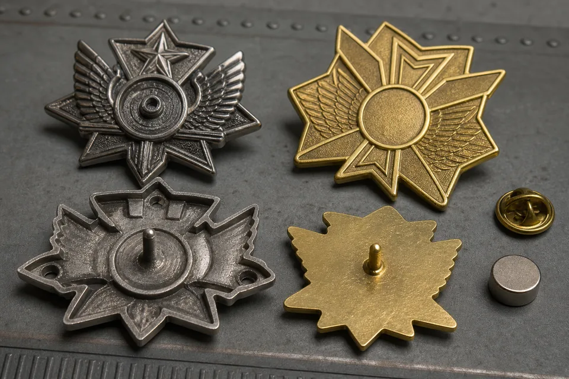

Zinc alloy and brass are two established choices for custom metal badges, pins, medals and coins. They can both produce durable, attractive products, and both accept a broad range of plating and color processes. However, they are not interchangeable in every design. Their manufacturing methods, structure and response to fine detail differ, so the right choice begins with the artwork and intended use rather than with a simple ranking of materials.
BadgeCraft Metalworks commonly works with zinc alloy because it is adaptable to complex shapes and dimensional projects. Brass remains valuable when a buyer wants a solid stamped piece, crisp metal lines and a traditional premium character. This guide explains the practical differences that matter during quotation and sample approval. It does not treat one material as automatically superior, because a well-designed zinc badge can outperform a poorly specified brass badge and vice versa.
Quick answer: zinc alloy or brass?
Choose zinc alloy when the design includes an irregular outline, open areas, deep sculpting, large dimensions or integrated loops and functional features. Die casting can create complex geometry efficiently and can reduce weight with a recessed or hollow back. It is a flexible option for large badges, medals, keychains and three-dimensional emblems.
Choose brass when the design suits stamping or die striking and the buyer wants a dense, solid feel with sharp raised and recessed detail. Brass is widely associated with traditional badges, premium lapel pins, commemorative pieces and metal-only designs. It performs especially well when polished highlights contrast with sandblasted or antique recessed areas.
| Decision factor | Zinc alloy | Brass |
|---|---|---|
| Typical forming method | Die casting into a shaped mold | Stamping or die striking sheet/blank material |
| Complex outlines and cutouts | Very adaptable | Possible, but complexity can require extra cutting or tooling |
| Deep 3D relief | Strong option | Excellent for controlled relief within stamping limits |
| Back construction | Solid or recessed/hollow | Usually solid stamped construction |
| Perceived character | Flexible, dimensional and modern | Dense, crisp and traditional |
How zinc alloy and brass badges are formed
Zinc alloy die casting
In die casting, molten zinc alloy flows into a mold that defines the outline, front relief and often much of the rear structure. This approach can reproduce curves, varying levels and openings that would be difficult to create by stamping alone. Attachment features such as loops can sometimes be integrated into the casting, reducing secondary assembly.
After casting, excess material is removed and the surface is polished. The piece may then be plated, antiqued, filled with enamel, printed and assembled with its backing. Surface preparation matters because plating reflects what lies underneath. A casting with incomplete polishing will not become smooth merely because it receives a bright finish.
Zinc alloy is also useful for managing the weight of larger pieces. A recessed back can preserve the visible outside edge and front relief while using less metal than a fully solid body. This should be planned rather than treated as a hidden shortcut: the proof should show the back construction, wall thickness and attachment position.
Brass stamping and die striking
Brass badges are commonly produced by pressing a die into the metal to create raised and recessed areas. The outline may then be cut, pierced or trimmed. Repeated force displaces the metal rather than filling a casting cavity, producing a compact solid piece with a clean traditional feel.
Stamped brass is particularly effective for two-dimensional or moderate-relief designs, fine borders, lettering and textured backgrounds. It responds well to selective polishing: high areas can be bright while recessed areas remain matte or receive antique color. The result can be elegant even without enamel.
The process has geometric limits. Extremely deep undercuts are not compatible with a straightforward stamping direction. Large internal openings or highly irregular outer shapes may need additional tooling and cutting operations. These are not impossible, but they can make zinc casting the more practical route.
Design capability and detail
The best material is the one that translates the artwork with the fewest compromises. A dimensional mascot, architectural emblem or layered shield may benefit from zinc casting because surfaces can rise and fall across multiple levels. A formal crest with fine lines, text and a controlled border may be ideal for brass stamping.
For enamel designs, both materials require metal boundaries between many adjacent colors. Those lines need enough width to survive forming, polishing and filling. Hard enamel is ground and polished flat, while soft enamel remains recessed beneath raised metal. Material choice does not remove the need to simplify tiny details.
For printed details, a smooth prepared area is important. Digital printing can add gradients, small lettering and photographic color that would be difficult in enamel, but buyers should still consider abrasion and whether a protective coating is needed. The decision then includes not only zinc versus brass, but also enamel, printing and surface protection.

Fine lettering and line quality
Brass is often selected for crisp die-struck lettering, but readable results still depend on font, size, depth and finish contrast. Zinc alloy can also reproduce lettering, especially at an appropriate scale. The question is whether the complete shape requires casting and whether the lettering remains robust after polishing and plating.
Ask the supplier to identify the smallest achievable line and gap for the selected process. Do not copy a minimum number from an unrelated project. A large antique badge, a small hard-enamel pin and a deeply cast medal have different constraints. The artwork proof should visibly enlarge or remove features that cannot be manufactured reliably.
Weight, thickness and back construction
Brass generally gives buyers the dense feel associated with a solid stamped badge. That can communicate quality in a presentation piece, but it also increases garment load as dimensions grow. Zinc alloy offers more freedom to create a recessed back on a large badge, medal or keychain, which can improve comfort and shipping efficiency.
Neither material should be made heavier simply to imply quality. Quality is better communicated through clean detail, consistent plating, smooth edges, secure attachments and controlled color. A heavy pin with one poorly placed post can rotate or pull fabric. A lighter badge with two well-positioned posts may perform better.
Thickness must support relief and rigidity. Our frequently requested 40 mm format can be made in different thicknesses depending on whether it is a wearable badge, medal or coin. A 5 mm section is more appropriate to certain substantial cast or commemorative products than to a conventional lapel pin. Ask for estimated weight before committing to a large order.
Plating, enamel and surface appearance
Both zinc alloy and brass can be prepared for common finishes including gold, silver, copper, black nickel and antique treatments. The visible tone comes from the plating layer, but base metal and preparation affect the process beneath it. Good polishing is essential for bright finishes; controlled texture is essential where the design requires contrast.
Antique finishes settle dark color into recesses, making relief easier to read. They are forgiving of complex sculpting and popular for badges, medals and coins. Bright finishes show reflections and make polished outlines stand out, but they also reveal surface unevenness more readily. Read our gold, silver and antique plating guide before selecting a finish solely from a screen rendering.
Enamel changes the balance. A large colored face may make the metal tone a narrow supporting outline, while a die-struck design makes the plating the main visual element. For projects using many enamel colors, the choice between soft enamel and hard enamel may influence price and surface feel more visibly than the difference between zinc and brass.
Tooling, quantity and cost planning
Material price is only one component of a custom badge quotation. Tooling, size, thickness, relief, cutouts, polishing, plating, color count, attachments, packing and quantity all contribute. Zinc alloy may be efficient for complex cast geometry because the shape is created in the mold. Brass may be efficient for suitable stamped designs, but complex piercing or multiple operations can add work.
Do not choose a metal using price per kilogram alone. A heavier brass piece may use more material but need a straightforward die. A hollow-back zinc piece may use less metal but require a more complex mold and polishing sequence. The relevant comparison is the finished, approved specification at the required quantity.
Our typical starting MOQ is 100 pieces per design, with adjustment possible according to process. Sampling usually takes about seven days and bulk production about 15 days after sample approval. Those are planning references rather than guaranteed dates for every order. Complex molds, special plating, testing and custom packing may require more time.
Quality checks that reveal a good material choice
Inspection should confirm more than the material named on a purchase order. On a zinc alloy casting, examine whether thin sections are fully formed, edges are smooth, recessed backs are clean and attachment points sit on stable metal. Look across the face under side light for pits or waves that become more visible after bright plating. On brass, check that stamped relief is complete, the trimmed outline is smooth and flat areas have not distorted under forming pressure.
For both materials, inspect plating coverage around edges and recesses, enamel boundaries, post alignment and the consistency of dimensions across samples. A caliper can confirm critical width and thickness, while a simple wear test on the intended garment reveals whether the selected weight and backing are practical. If a badge must fit equipment or packaging, test that interface using the physical sample rather than relying only on a rendering.
Material declarations and compliance requirements should be agreed before production. If a market or customer requires restricted-substance documentation, state the exact standard, product scope and test expectation in the inquiry. A general material name does not prove that every plating layer, enamel and attachment satisfies a particular requirement. Clear documentation avoids treating “zinc alloy” or “brass” as a complete compliance specification.
A practical material selection checklist
- Define use: wearable pin, uniform badge, medal, coin, keychain or equipment emblem.
- Confirm size: include the longest dimension, thickness target and critical openings.
- Identify relief: flat enamel, two-level metal or sculpted three-dimensional surfaces.
- Evaluate weight: consider clothing, ribbon, key ring, packaging and shipping.
- Select appearance: bright plating, antique contrast, brushed texture, enamel or printing.
- Review back and attachment: solid or recessed back, post count, magnet, screw or loop.
- Compare complete quotations: tooling, unit price, sample, packing and lead time.
If your design is a complex dimensional shape, zinc alloy is often the first material to evaluate. If it is a formal stamped emblem with crisp relief and a solid premium feel, brass deserves consideration. For many simple enamel pins, additional metals such as iron may also be appropriate. The manufacturer should explain why a recommendation fits the artwork rather than simply naming the material they use most often.
Frequently asked questions
Is zinc alloy or brass better for custom badges?
Neither is always better. Zinc alloy is highly adaptable to complex shapes and deep casting. Brass is excellent for solid stamped construction and crisp traditional relief. The artwork and use determine the better choice.
Which material is better for detailed 3D badges?
Zinc alloy die casting is commonly selected for deep sculpting, irregular outlines and openings. Brass can produce excellent relief, but the geometry must suit the stamping direction and available depth.
Can both materials receive gold or silver plating?
Yes. Both can receive common decorative finishes after suitable preparation. Bright, antique, brushed and sandblasted effects should be confirmed with physical references because screens cannot reproduce metal reflection accurately.
What files should I send for a material recommendation?
Send vector PDF or layered PSD artwork when available, plus target dimensions, quantity, finish, attachment, packing and intended use. Reference photos help communicate depth and surface expectations.
Not sure which metal fits your design?
Send your artwork and intended use. We will review geometry, relief, weight and finish before recommending a production route.